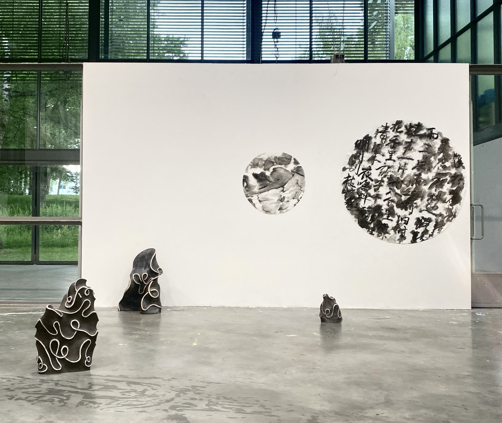
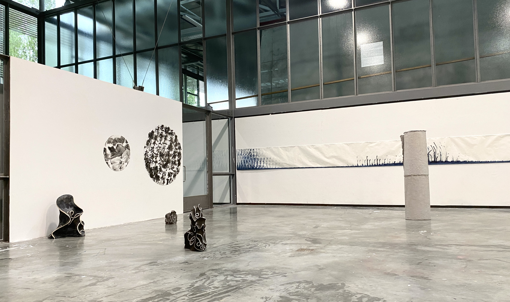
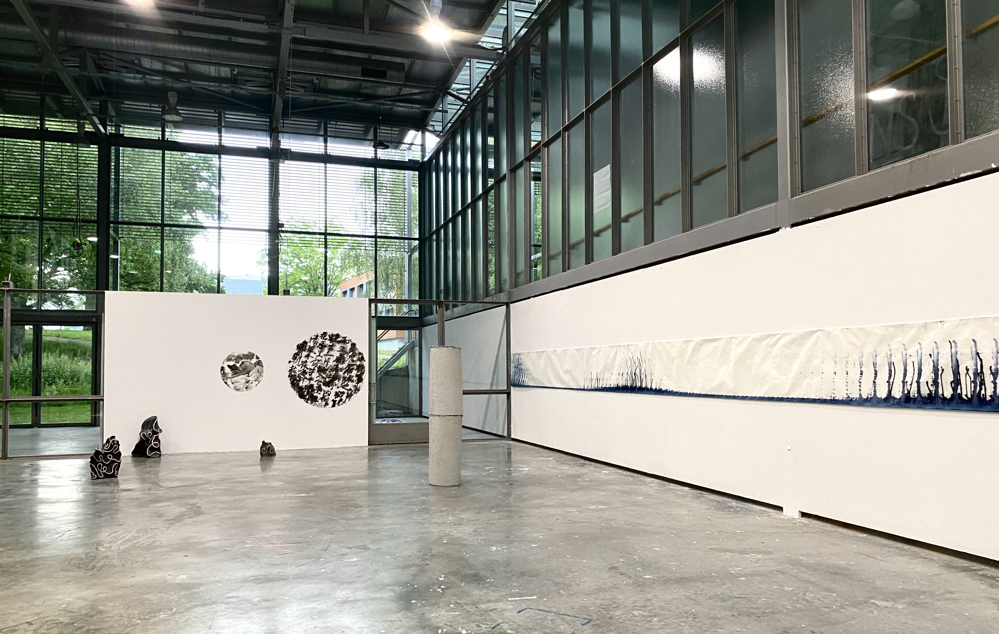
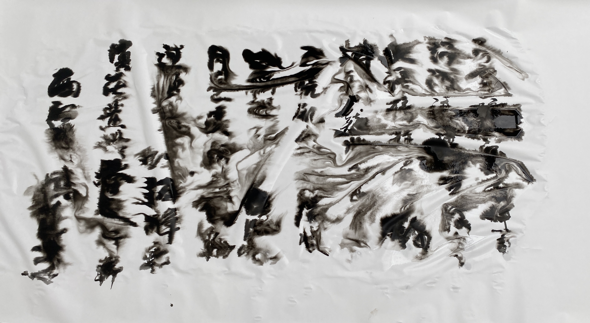
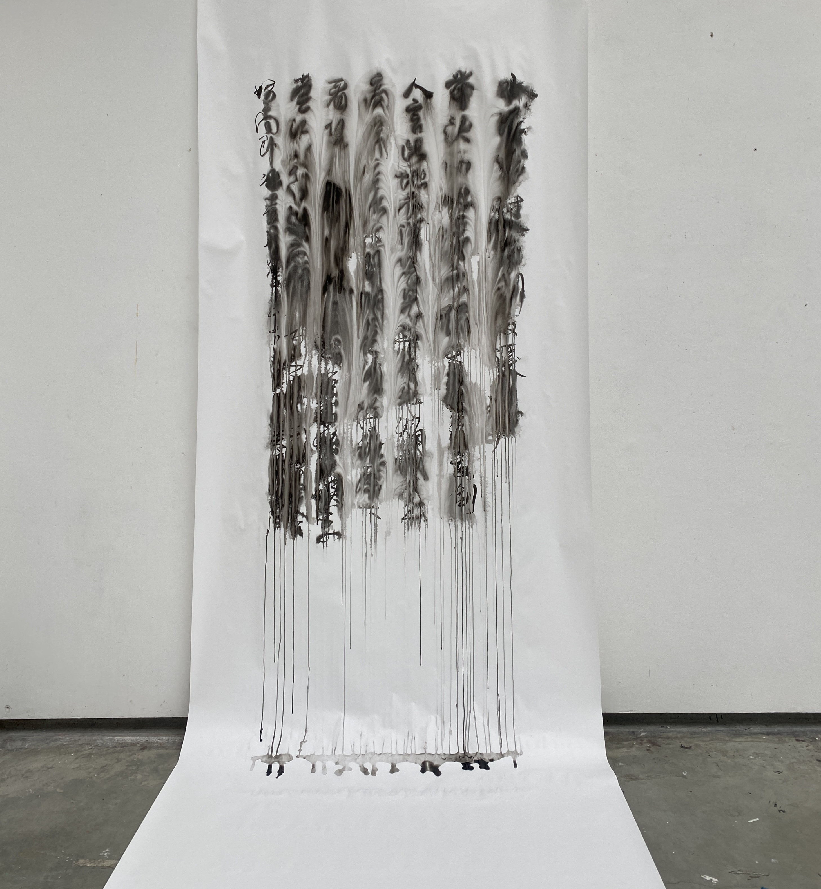
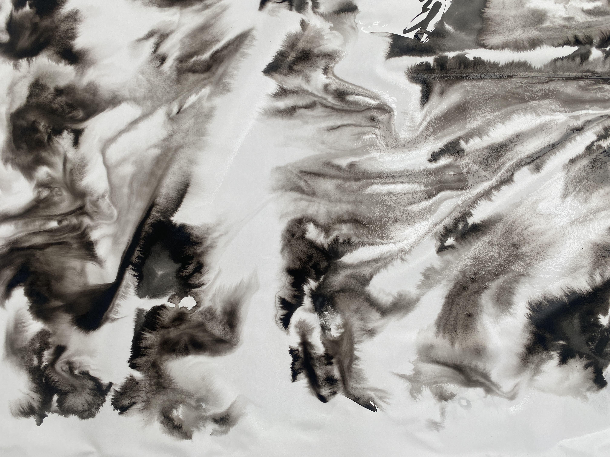

La dissolution de l’histoire I
C’était une pratique de calligraphie citant deux poèmes anciens, dont un poème de Xin Qiji (28 mai 1140 – 3 octobre 1207), poète chinois de la dynastie Song. Ces poèmes décrivent des paysages de montagnes et de rivières, ainsi que les transformations de la nature et des affaires humaines.
L’un des poèmes évoque également un paysage observé lors d’une marche nocturne : la clarté de la lune, les pies, la brise, le parfum des fleurs de riz, ainsi que les chants des cigales et des grenouilles.
J’ai écrit ces poèmes à l’encre sur du papier entièrement imbibé d’eau. Les caractères se sont progressivement dissous, laissant après le séchage des traces abstraites. Ce processus représente pour moi une transition de la forme tangible vers l’intangible. Les caractères, initialement reconnaissables, deviennent progressivement méconnaissables.
J’ai découpé le papier en forme de cercle afin de faire apparaître un souvenir de mon enfance : celui des champs de pastèques. Cette forme circulaire rappelle également la lune et introduit une dimension imaginaire dans l’installation.
Les sculptures en céramique prolongent ce processus dans l’espace tridimensionnel. Les traces produites par la dissolution sont transformées en lignes abstraites qui évoquent également les gestes de la calligraphie.
Pratique de dissolution


